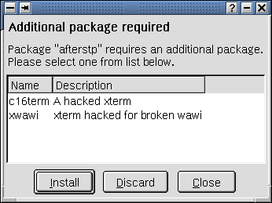
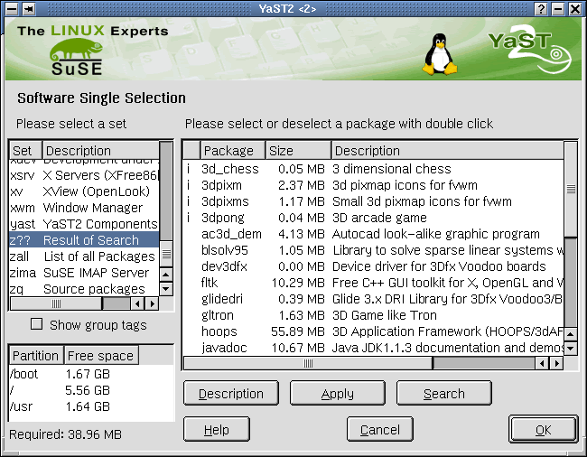

This dialog is called from Detailed Selection and shows a list of all package sets/groups and all packages belonging to the selected set/group. The user can select additional packages or deselect selected ones. The package agent checks the package dependencies, i.e. determines conflicting and additional required packages. The module is used for the Single Software Selection as well as the Commercial Software Selection screen. The module is called with special arguments to make it possible to create a different layout and functionality for the particular requirements.
- inst_sw_single `single `only_check
The module is only called to show unresolved dependencies from former selection in inst_sw_details and is closed afterwards.
- inst_sw_single `single `not_only_checked
The Single Software Selection screen is opened and the user can do the selections.
- inst_sw_single `pay `not_only_checked
The Commercial Software screen is opened and the user can choose pay packages.
- Check dependencies with every selection or deselection of a package
and show the appropriate popups
- Popups informing about unresolved package dependencies
- Common description:
- Popups:
Scenario: the user had selected some groups (Games, KDE ...), entered Single Selection and selected a package.
Popups about package conflicts are shown only, if the user has ever selected a package in YaST2 Single Selection before (not at once when entering the dialog).
When clicking on a line in package list, dependencies are checked BEFORE the dependendies concerning the actual selection are respected.
Additional needed packages (AND dependencies) are installed automatically without showing a popup.

Inform user that there are unresesolved dependencies in existing selection, not directly related
to his actual selection.
Button Continue will delete all OR and XOR dependencies (that means inform YaST2 package info server to forget about it), all AND dependencies will be executed (that means YaST2 will install all additional needed packages).
Button Show dependencies will cause more popups:
Existing OR dependencies in pre-selection of groups. The user can choose an additional
package.
Existing XOR dependencies (i.e. package conflicts) would be shown too (see .
After that, popups concerning the actual selection will be shown, e.g. user has selected "minigcc":

or user has deselected an automatically needed package:

Returns to module inst_sw_details.ycp, which returns to inst_sw_select.ycp which does the remaining work to get the install packages and write install_list to user_settings (see Software Selection).
There is an additional button "Search" in YaST2 Single Selction.
The user input can be a package name, part of the name, a word from description ...
There are the possibilities to search in package (short+long) description and to ignore case.
The result is shown in package list (set "z???").


Checkbox "Show group tags" is added YaST2 Software Single Selection - see picture above
All packages are sorted on groups tags now (in addition to be sorted on package sets).
A click on the checkbox will change the list of package sets to list of group tags. If the user selects a group,
the list of packages belonging to that group will be shown on the right.
Group tags are: Amusements/Games, Amusements/Graphics, Applications/Archiving ..... up to X11/XFree86,
X11/XFree86/Servers.